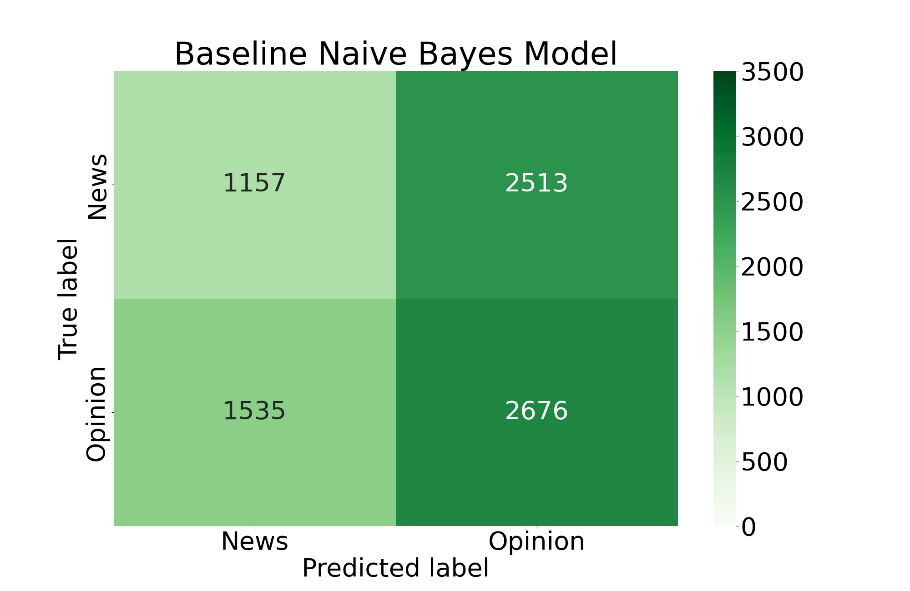
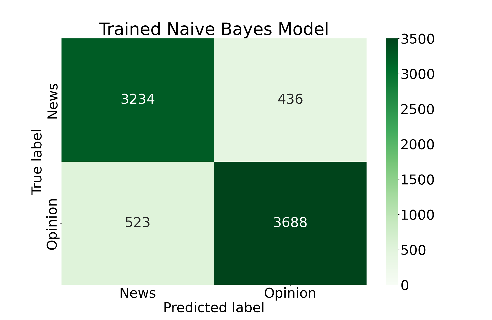

Naïve Bayes
Classifying Tweets
In this section of the project I will be performing Naïve Bayes classification using Twitter data relating to school shootings. The original intent of this section was to classify tweets based on their political sentiments, but we explain further in the section why that approach is neither responsible nor viable. Instead, we classify tweets based on their intent—whether they are expressing opinions or sharing news.
I have a corpus of about 2.5 million tweets mentioning school shootings, which I obtained using the academic access Twitter API. The labels I will use to train my Naïve Bayes model will come from hashtags in the tweets. I will identify some of the most common hashtags in my corpus to identify classes of interest, and I will then train a Naïve Bayes algorithm to group tweets into these classes. The top ten most cited hashtags in the corpus are as follows:
| Hashtag | Count |
|---|---|
| #shooting | 9,754 |
| #news | 8,014 |
| #school | 7,519 |
| #gunviolence | 2,761 |
| #guncontrol | 2,567 |
| #schoolshooting | 2,437 |
| #guncontrolnow | 2,407 |
| #nra | 2,277 |
| #shooter | 1,715 |
| #parkland | 1,711 |
While the original intent of this analysis was going to be prediction of the political standing of each tweet based on the hashtags, the value counts have shown that the data are too biased for this kind of approach. The vast majority of hashtags included in tweets are in favor of gun control, which makes sense because the tweets were queried specifically in connection to individual school shooting incidents. The majority of expressed sentiment after a tragic school shooting incident would understandably be to tighten gun laws. I believe that it is for this reason that the value counts of the hashtags are highly imbalanced, with far greater gun control sentiment over gun rights sentiment.
The other issue with this approach would be the ambiguity associated with each label. If we were to treat hashtags as the labels classifying whether a tweet supports stricter or looser gun laws, it is entirely possible that a given hashtag could appear in either type of tweet. For example, a hashtag #nra may appear in a tweet that criticizes National Rifle Association (NRA) agendas or it may appear in a tweet that supports them. These biases in the data have compelled a new approach.
Instead of predicting a tweet's political standing, we will instead classify tweets as "News" tweets or "Opinion" tweets. The labels for this analysis will be applied based on the type of hashtags used in the tweet. Hashtag classifications are defined below.
| News | Opinion |
|---|---|
| #news | #guncontrolnow |
| #breakingnews | #gunsense |
| #gunreformnow | |
| #neveragain | |
| #endgunviolence | |
| #stopgunviolence | |
| #enoughisenough | |
| #nrabloodmoney | |
| #rejectthenra | |
| #enough | |
| #momsdemand |
With these hashtag classification criteria, we now assign these class labels to the tweets that contain the hashtags of interest. The value counts for these tweets are as follows:
| Label | Count |
|---|---|
| Opinion | 21,154 |
| News | 18,251 |
| Both | 82 |
The "Both" label represents tweets tha have hashtags from both classes in them. Impressively, there are only 82 of them. We examine the content of a couple of them below:
“We’re expected to be human shields”: Teachers are unprotected — and scared https://t.co/11ehIs3AuH #news #feedly #education #teachertwitter #GunControlNow
— Fat Puppy Productions (@FatPuppyProduc1) June 13, 2022
Enough. This has to stop. #UvaldeMassacre #UvaldeStrong#truecrime#truecrimecommunity#BREAKING#BreakingNews#Enoughhttps://t.co/lQ3wbaiCh0
— thiscountrygirlslife (@countrygrllife) May 25, 2022
Clearly the "Both" class has some tweets that fall under "Opinion" tweets and some that fall under "News" tweets. The first tweet shown above would likely be considered a "News" tweet even though it contains hashtags that we define as being opinion-based. Likewise, the second tweet would probably be considered an "Opinion" tweet even though it contains a "News" hashtag. Luckily the number of tweets in this "Both" class is so small that it won't be necessary to include them in our training dataset. Our "Opinion" and "News" classes are roughly balanced (have about the same number of tweets belonging to each class), so we will proceed with training the Naïve Bayes classifier on these data.
With the classifier trained, we examine its performance using confusion matrices and numerical metrics. We can get the best impression of the classifier's performance by comparing it to a "baseline" model, or a model that is trained on completely random data. In the confusion matrices below, each square represents a classification group that a number of tweets belongs to. Working clockwise from the top left, the squares represent: tweets that were correctly classified as "News" tweets, "News" tweets that were incorrectly classified as "Opinion" tweets, tweets that were correctly classified as "Opinion" tweets, and "Opinion" tweets that were incorreclty classified as "News" tweets.
 We can also use metrics to compare the performance between the two models. The definitions of these metrics are defined as:
- Accuracy: The ratio of correct classifications to all classifications.
- Precision: The ratio of true positives to the total number of true positives and false negatives. In this case, we define the positive class as a "News" tweet. Thus, in this scenario precision represents the classifier's propensity for correctly classifying "News" tweets.
- Recall: The ratio of true positives to the total number of positives classified. In this case, we define the positive class as a "News" tweet. Thus, in this scenario recall represents the classifier's propensity for minimizing misclassification of "Opinion" tweets.
- F1: The harmonic mean between precision and recall. In this scenario, it serves as a combination between the classifier's ability to correctly classify "News" tweets while minimizing misclassification of "Opinion" tweets.
The results of the metrics are:
| Metric | Trained Model | Baseline Model |
|---|---|---|
| Accuracy | 0.878 | 0.486 |
| Precision | 0.861 | 0.430 |
| Recall | 0.881 | 0.315 |
| F1 | 0.878 | 0.499 |
In conclusion, the model is quite good at classifying tweets as either "News" tweets or "Opinion" tweets. As in many machine learning algorithms, the model is only as good as its data. The use of hashtags as proxies for labels in this corpus of tweets about school shootings was certainly less than perfect, and therefore results in a poorer model.
It is worth noting that this model was trained and tested exclusively on tweets with hashtags belonging to the classification dictionaries defined above. In total, this set of tweets totals to 39,405 tweets out of the total 2,485,482 tweets we retrieved using the Academic Research Twitter API. This offers an interesting opportunity to apply the model to the remaining 2.4 million tweets about school shootings, gaining insight into the variance between "Opinion" tweet frequency and "News" tweet frequency over time. This will be a point of future analysis, and will be updated here once performed.